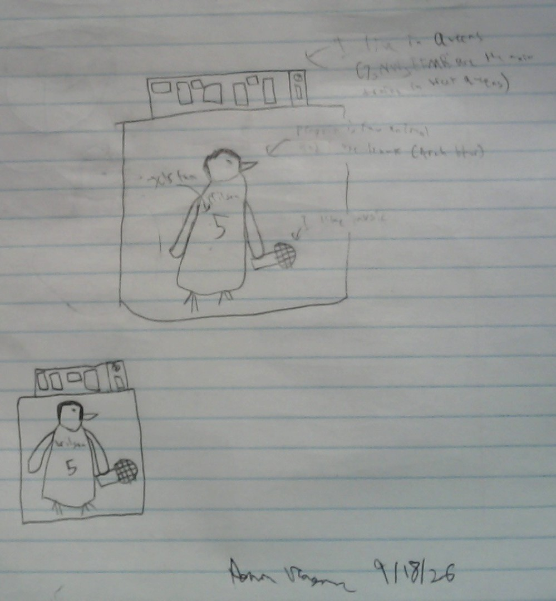
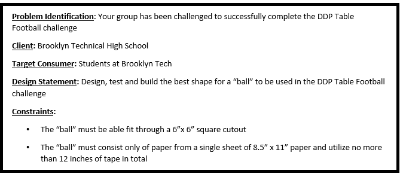
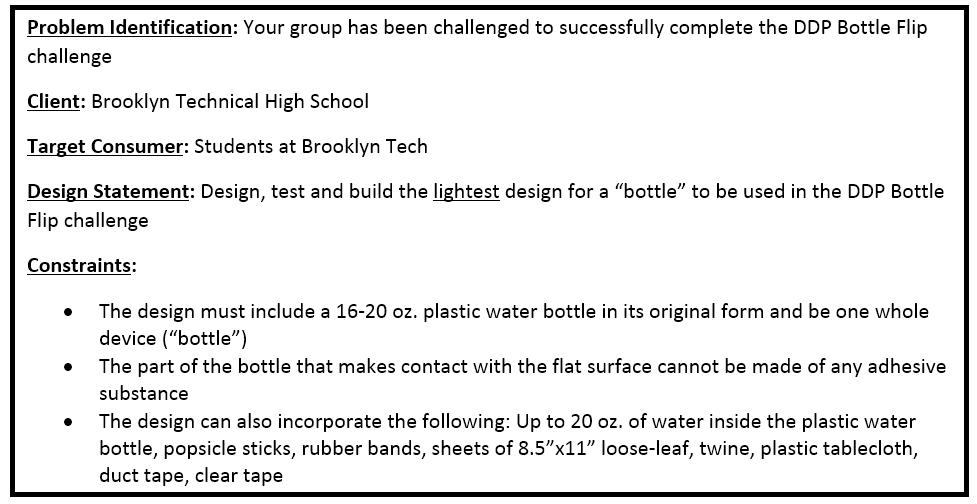
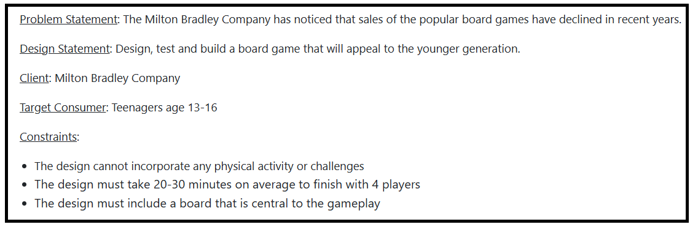
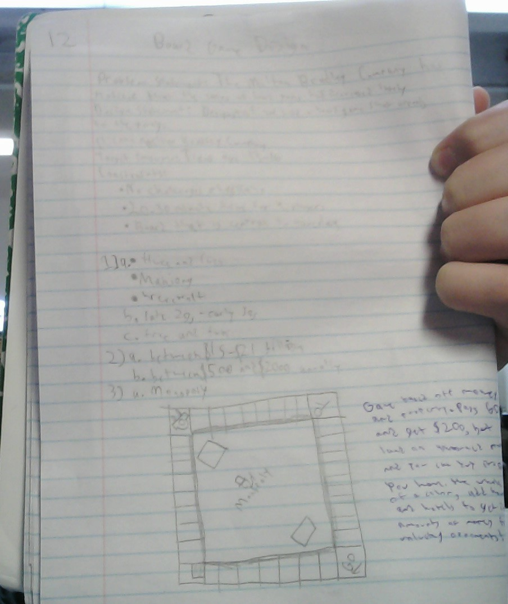
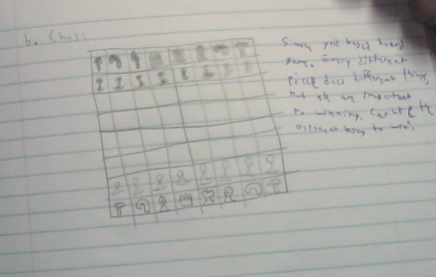

This is my logo that I drafted in September. It has a elevated train because I live in Queens and frequently take elevated lines like the 7 and N/W. There's a penguin for 2 reasons:
Penguins are my favorite animal.
I use Linux, and the mascot is a penguin.
The penguin has a Wilson jersey because I'm a Jets fan. It's holding a microphone because I like music.





It's important to do research before design because innovation is like the perfect apple; It must be picked off someone else's tree, which stemmed from their innovation.